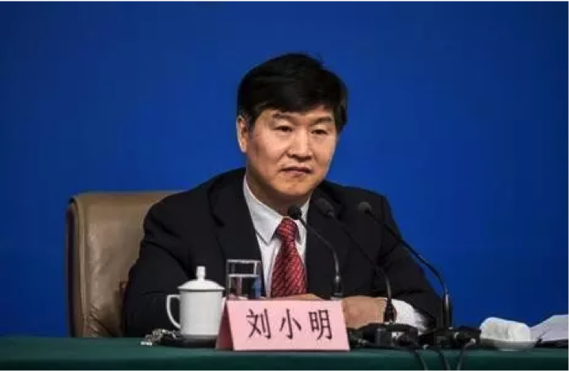
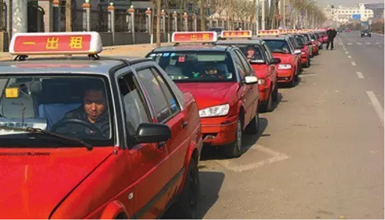
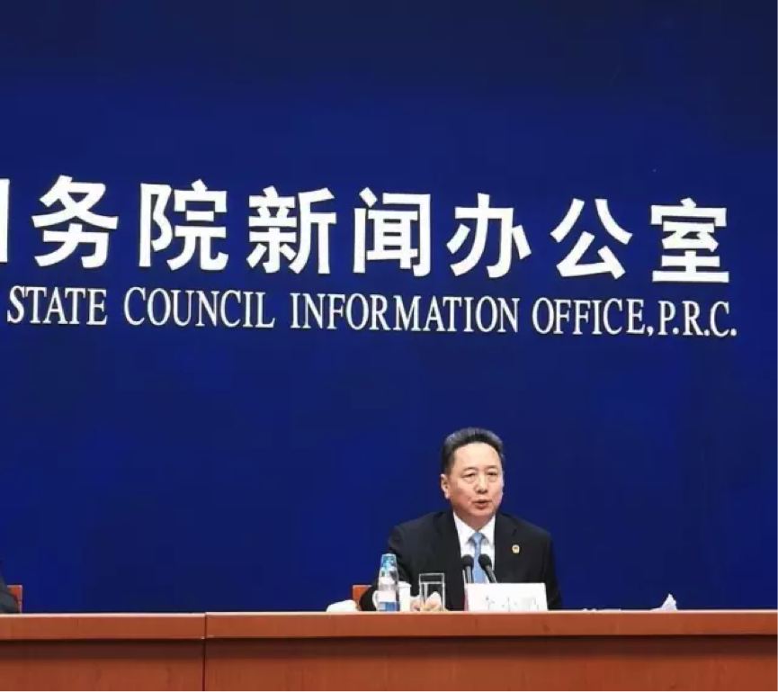

国务院新闻办公室于2017年2月27日在国务院新闻办新闻发布厅举行新闻发布会，请交通运输部介绍交通运输推进供给侧结构性改革有关情况，并答记者问。

以下是实录：
记者：最近看到一些新闻，关于新能源的出租车，看到可能有20个城市把所有出租车换成新能源车，请介绍一下，换成新能源出租车的具体安排，有多少个城市，还有时间表。这个是不是真正有20多个城市会换新能源汽车为出租车？
刘小明：新能源汽车的推广和应用，是作为我们国家科技创新、绿色发展非常重要的一项内容，交通运输部高度重视新能源汽车的推广应用，将其作为节能减排、空气治理和推动行业转型的重要抓手。在国务院《关于加快新能源汽车推广应用指导意见》印发以后，交通运输部及时制定了配套的有关文件，明确到2020年新能源城市的公交车达到20万辆，新能源出租汽车和城市物流配送车辆要达到10万辆的发展目标，而且国家财政部、交通运输部还就有关新能源车的发展，制定了一系列鼓励支持政策，加快发展。
您刚才提到20余个城市都提出要更新出租车为新能源汽车，我可以告诉你，可能在做这方面工作的城市可能还要多，现在有一个城市已经全部实现新能源车，就是山西太原，所有的出租车都已经更新成新能源汽车，而且都是纯电动车辆。近两年新能源车在城市公交、出租、汽车租赁、货运物流、邮政快递等领域推广应用非常快。
截止到去年年底，也就是2016年底，全国新能源公交车的总量已经超过了16万辆，新能源出租汽车已经达到了1.8万辆，新能源的城市物流配送车辆已经达到了9.4万辆，而且在这方面各个城市还都在加快推进，一方面是作为节能减排，另外一个方面也是作为实现行业的转型升级。所以，这些工作我们都在积极地推动，可能会在更大的范围还会有更好的结果。谢谢。
最后，李小鹏李部长说：“我曾经担任过山西省省长，在我担任山西省长期间，我积极推动太原市出租汽车更换为新能源汽车、电动车代替过去传统燃油车。这就是我为什么请小明副部长回答这个问题，我不能自己表扬我自己。”